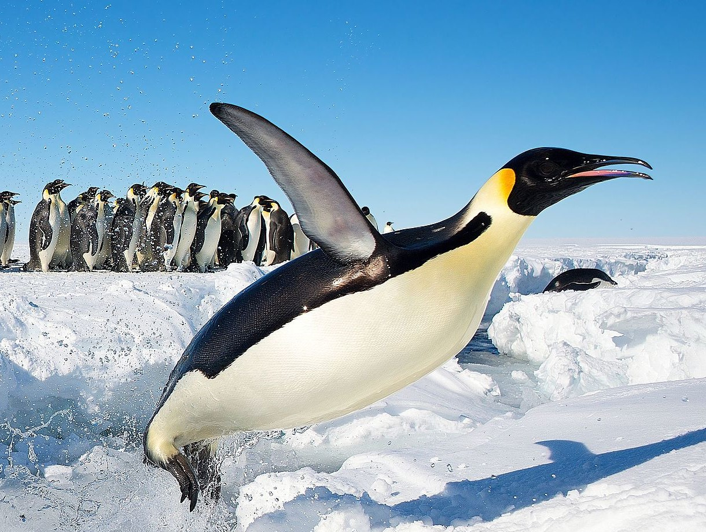

First, let's take care of the boring stuff.
Here's the html tutorial, and here's the css tutorial.
Now, much more importantly, let's talk about
You can learn more about these adorable birds at their wikipedia article here.
Look at how cute they are!
This little one's named Skipper, he let Wikipedia take a great picture of him. Here he's really trying to fly, but sadly penguins are flightless. It's okay, he's doing his best and it looks fun anyway.
Fun fact about Skipper, he's also been learning the basics of math!
He recently learned the concept of exponentials, and he's created this table of powers of two.
| x | 2^x |
|---|---|
| 0 | 1 |
| 1 | 2 |
| 2 | 4 |
| 3 | 8 |
| 4 | 16 |
| 5 | 32 |
| 6 | 64 |
| 7 | 128 |
| 8 | 256 |
While making a table like this would be simple rote work for many humans, it was quite the accomplishment for our friend Skipper. We should all be very proud.